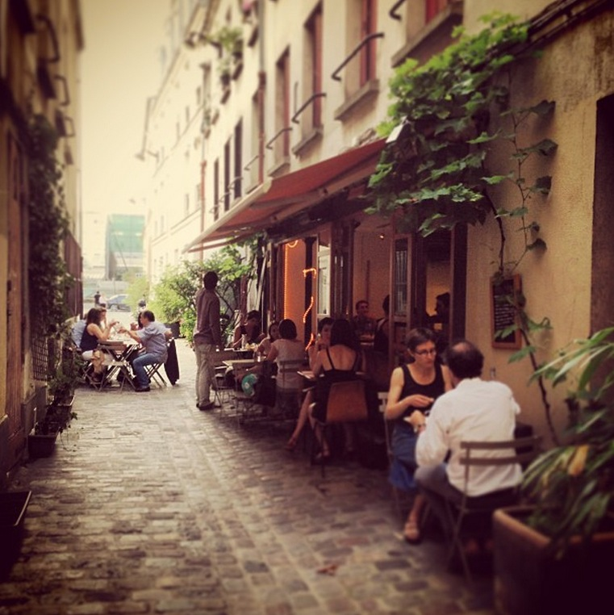

| Home | Top 10 Things To Do In The French Rivera | Top 10 Romantic Things To Do in Paris France | Ten Top Places To Visit In Paris |
|
|||
Top 10 Romantic Things To Do in Paris France
|
Romantic Dinner SettingIf you ever wanted to re-create that spaghetti scene in a cobblestone alleyway from Lady and the Tramp, I have your place. Keep a sharp eye out on the Rue du Faubourg Saint-Antoine or you’ll surely miss the hidden passage at number 159. Sample Fabrizio’s homemade pasta and Italian dishes such as clam linguine and melt-in-your-mouth saffron risotto, at this charming little secret of the 11th arrondissement. When you’ve finished dinner, no need to retreat home. Head back out of the alley, down Rue du Faubourg Saint-Antoine (towards Bastille), and turn right onto Rue Charonne for an off-beat evening stroll through the local neighbourhood with charming bars (avec terrasse) for a drink. After dinner, make sure to wave to Ernest Hemingway’s old window at 74 rue du Cardinal Lemoine. |